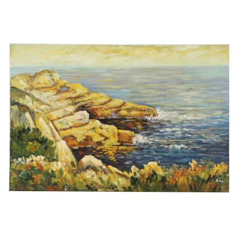

PASSImpressionistic Oil Painting of Coastal Rocks, 21st Century
Large gallery-wrapped canvas, impressionistic coastal rocks/seascape, heavy palette-knife
32 min left
Current bid$5 · 6 bids
Est. value$35
Your max bid$0
Margin at bid−$6
Details & price history →